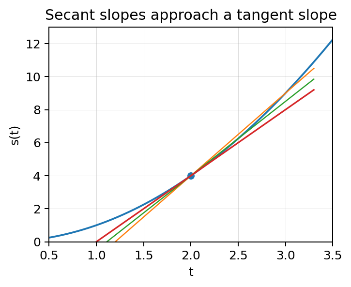
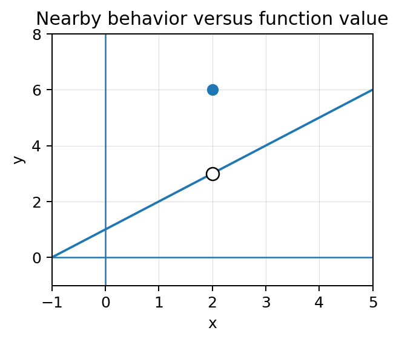

A limit describes where nearby behavior is heading, not merely what happens at one point.
Section Introduction
Nearby values can reveal a precise destination
Calculus often asks what is happening at an instant even though ordinary arithmetic measures change across an interval. Limits bridge that gap. We watch what a function, slope, or rate does as inputs move closer and closer to a target.
The notation matters because it separates the input being approached from the output being approached. A limit statement is about nearby behavior. It can agree with the actual function value, but it does not have to.
That distinction becomes the foundation for derivatives, continuity, and many later AP Calculus arguments.
Read every limit statement as a sentence about approach: input approaches a target, output approaches a value.
Vocabulary / Key Notation Preview
limit · average rate of change · instantaneous rate of change · limit notation
Sort the vocabulary. Write each vocabulary word in the column that best matches what you know right now. You may move a word later.
| Know for sure | Recognize | Don't know yet |
|---|---|---|
Section Preview
Skim before close reading. Look at the headings, tables, graphs, and examples. Find 1–2 things you notice and 1–2 things you wonder about.
| What I noticed | |
|---|---|
| What I wonder |
Close Reading Directions
READ IN SHORT CHUNKS. Annotate the words and visuals together. Underline evidence, circle or highlight bold vocabulary, label arrows or important features, connect sentences to tables and graphs, and jot short questions or connections in the margins. Use these directions through the What's To Come section and the reading that follows.
What's To Come
PREVIEW / DECOMPOSE. Use the connected parts to see where this section is headed. Annotate the representations and prompts as you work.
A runner's position is modeled by \(s(t)=t^2+1\) meters. To estimate the instantaneous velocity at \(t=3\), average velocities are calculated from \(t=3\) to \(t=3+h\).
| \(h\) | 0.5 | 0.1 | 0.01 | 0.001 |
|---|---|---|---|---|
| Average velocity | 6.5 | 6.1 | 6.01 | 6.001 |
Part A
What value do the average velocities appear to approach as \(h\to0\)?
Part B
Write a limit statement for the average-velocity expression \(\dfrac{s(3+h)-s(3)}{h}\) as \(h\to0\).
Part C
Explain how shrinking the interval connects average velocity to instantaneous velocity.
Part D
The position value \(s(3)=10\). Explain why that function value is different from the velocity limit you just estimated.
I Can 1I can relate average versus instantaneous change to the idea of a limit and read and interpret limit notation.
A limit is a statement about what a changing quantity approaches. In \(\lim_{x\to a}f(x)=L\), the input \(x\) moves toward \(a\), while the output \(f(x)\) moves toward \(L\). The arrow means “approaches,” not “equals.”
Average rate of change compares two points: \(\dfrac{f(b)-f(a)}{b-a}\). Instantaneous rate of change asks what that rate approaches as the second input closes in on the first. This is why limits naturally appear when secant slopes move toward a tangent slope.
A limit can exist even if the function value at the target is missing or assigned a different value. Nearby behavior controls the limit.

As \(h\) shrinks, the secant slope can approach one limiting slope.
Example 1: Interpret a limit statement
Suppose \(\lim_{x\to4}g(x)=7\) and \(g(4)=2\). Write a complete sentence that distinguishes the limit from the function value.
You Try It 1: Read the notation precisely
Suppose \(\lim_{t\to-1}p(t)=5\) but \(p(-1)\) is undefined. Explain what the limit statement tells you and what it does not tell you.
Stop and Discuss
- What does the arrow in limit notation mean?
- Why can a limit exist when the function value is missing?
I Can 2I can estimate a limit from a graph or table.
Graphs and tables give numerical and visual evidence for a limit. On a graph, trace the curve toward the target input and watch the output values. In a table, use inputs that approach the target from values close to it.
A good estimate is not based on one nearby point. Look for a stable trend. If values from both sides settle toward the same output, that supports a two-sided limit. The function value at the exact input can still be different.
When reading a graph, attend to scale, holes, and filled points. A filled point shows the function value; the path of the graph near the input shows the limit behavior.
Graph

Table
| x | 1.9 | 1.99 | 2.01 | 2.1 |
|---|---|---|---|---|
| f(x) | 2.9 | 2.99 | 3.01 | 3.1 |
Notation
\(\lim_{x\to2}f(x)=3\)
Point Value
The filled point shows \(f(2)=6\).
Different representations can support the same limiting conclusion while the point value remains separate.
Example 2: Estimate from a table
Estimate \(\lim_{x\to5}q(x)\) from the table.
| x | 4.9 | 4.99 | 5.01 | 5.1 |
|---|---|---|---|---|
| q(x) | 9.8 | 9.98 | 10.02 | 10.2 |
You Try It 2: Estimate from a graph
Use the graph below to estimate \(\lim_{x\to2}f(x)\) and state \(f(2)\).
Stop and Discuss
- What makes a table useful for estimating a limit?
- On a graph with a hole and a filled point, which feature controls the limit?
I Can 3I can connect shrinking secant intervals to instantaneous change.
A secant line joins two points on a graph, so its slope is an average rate of change. If one point stays fixed while the other moves closer, the secant interval shrinks. The sequence of secant slopes may settle toward one number.
That limiting number is the instantaneous rate of change when the limit exists. In later units this becomes the derivative, but the idea starts here: instantaneous information is obtained by examining a controlled limiting process.
Do not substitute a zero-length interval into the average-rate formula. That would create division by zero. Instead, use the limit as the interval length approaches zero.
- Choose a fixed input \(a\).
- Use a second input \(a+h\).
- Compute \(\dfrac{f(a+h)-f(a)}{h}\).
- Let \(h\) approach 0 and observe the slope values.
| h | 0.4 | 0.1 | 0.01 |
|---|---|---|---|
| secant slope | 8.4 | 8.1 | 8.01 |
The interval approaches zero; it is not replaced by zero inside the quotient.
Example 3: Use shrinking secant slopes
For a motion model, secant slopes near \(t=4\) are 9.6, 9.2, 9.02, and 9.002 as the interval shrinks. Estimate the instantaneous rate at \(t=4\) and explain your evidence.
You Try It 3: Recognize the limiting slope
Average rates on intervals ending closer and closer to \(x=1\) are -3.5, -3.1, -3.01, and -3.001. Estimate the instantaneous rate at \(x=1\). What feature of the data supports your estimate?
Stop and Discuss
- Why do we let the interval length approach zero instead of setting it equal to zero?
- What evidence would make you doubt that the secant slopes have a single limiting value?
Vocabulary Reference
| Term | Meaning in this section |
|---|---|
| limit | The value a function, rate, or quantity approaches as the input approaches a target. |
| average rate of change | Change in output divided by change in input over an interval. |
| instantaneous rate of change | The limiting value approached by average rates over shrinking intervals. |
| limit notation | Symbolic language such as \(\lim_{x\to a}f(x)=L\), read as an approach statement. |
Section Summary
- A limit describes nearby behavior as an input approaches a target.
- The function value at the target may differ from the limit.
- Graphs, tables, and shrinking secant slopes provide evidence for limiting behavior.
- Instantaneous rate emerges as a limit of average rates over shrinking intervals.
What I Understand Now
Write 2–4 sentences explaining the difference among a function value, a two-point average rate, and a limiting instantaneous rate. Include at least one correct limit statement.
Common Mistakes to Watch
| Mistake | What to remember |
|---|---|
| Reading \(x\to a\) as \(x=a\). | The arrow means the input approaches a; nearby behavior is the focus. |
| Assuming \(f(a)\) must equal the limit. | The point value and the nearby limiting value are different mathematical statements. |
| Setting the secant interval equal to zero. | Let the interval length approach zero; do not divide by zero. |
| Using one table value as the limit. | Look for a trend from values approaching the target, ideally from both sides. |